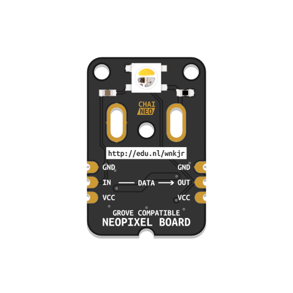

Chainable RGB/W LED (ChaiNEO)

A light source that can produce RGB colored and white light. Can be daisy chained.
This component is based on an RGB/W LED sold by Adafruit and is compatible with their NeoPixel library. Extensive information on NeoPixel components and their use is available here.
Before proceeding, make sure your LED module looks like the illustration above. If you are not sure if this is the correct version, refer to this overview.
Wiring
Confirm that the ChaiNEO module is oriented correctly, with the input port (marked “IN”, at the base of the arrow) connected to the Grove connector on your BitsyExpander Board or the previous LED in your chain.
Preparation
The ChaiNEO modules use a Neopixel-compatible RGB/W LED. To easily control them in code, the neopixel library is needed. The library should be pre-loaded on the ItsyBitsy Microcontroller included in your kit.
You can verify that the library is installed by ensuring a file called neopixel.mpy is present in the lib folder of your CIRCUITPY drive. If not, download Adafruit’s Library Bundle for Version 8.x here. Extract the needed file from the bundle and place it in the lib folder on your microcontroller. You can learn more about libraries and their use in the Glossary or the ../../Tutorials.
The examples below assume your component is connected to the connector labeled D13 on the BitsyExpander Board.
Making a Chainable RGB/W LED blink
This example uses the fill() function to set the brightness of each color channel (RED, GREEN, BLUE, WHITE) to a value between 0 to 255. The value 0 corresponds to off, while 255 means fully on. A bright white LED, for example, is defined by (0, 0, 0, 255) and a bright red one is (255, 0, 0, 0). (255, 0, 255, 0) mixes red and blue to make the LED appear purple, while (0, 0, 0, 0) will turn it off. Use values between 0 and 255 to vary the brightness level and mix different colors.
During the setup phase, we use the fill() function and pass it the value 0 to ensure all LEDs are off on startup, as in this context, 0 is identical to (0, 0, 0, 0). The show() function is called to display the new values defined using fill().
# --- Imports
import time
import board
import neopixel
# --- Variables
pin_leds = board.D13
num_leds = 1
leds = neopixel.NeoPixel(pin_leds, num_leds, auto_write=False, pixel_order=neopixel.GRBW)
# --- Functions
# --- Setup
leds.fill(0)
leds.show()
# --- Main loop
while True:
print("ON")
leds.fill((255, 0, 255, 0))
leds.show()
time.sleep(1)
print("OFF")
leds.fill((0, 0, 0, 0))
leds.show()
time.sleep(1)
At the end of our neopixel object declaration , we define pixel_order=neopixel.GRBW. This does not mean that our code expects us to provide color information in that order; it describes the configuration of the LED itself. The code still expects color information to be arranged in the order (RED, GREEN, BLUE, WHITE). If you buy other NeoPixel-compatible components online, the pixel_order value may need to be configured differently. A comprehensive guide on how to use different kinds of NeoPixels is available here.
Fading a Chainable RGB/W LED in and out
This example uses a for loop to increase and decrease the brightness of an LED on each run through the loop. The sleep() function is used to slow down the speed at which the loop iterates.
# --- Imports
import time
import board
import neopixel
# --- Variables
pin_leds = board.D13
num_leds = 1
leds = neopixel.NeoPixel(pin_leds, num_leds, auto_write=False, pixel_order=neopixel.GRBW)
delta = 5
# --- Functions
# --- Setup
leds.fill(0)
leds.show()
# --- Main loop
while True:
print("Fading in...")
for intensity in range(0, 255, delta):
leds.fill((intensity, 0, intensity, 0))
leds.show()
time.sleep(0.05)
print("Fading out...")
for intensity in range(255, 0, -delta):
leds.fill((intensity, 0, intensity, 0))
leds.show()
time.sleep(0.04)
Using the sleep() function to set the fading speed will prevent other code from executing while sleeping. This is called a blocking delay and does not work well when multitasking. You can read Adafruit’s tutorial on Multitasking with CircuitPython to learn about a non-blocking alternative.
Using a chain with multiple LEDs
This example demonstrates how to address individual LEDs in a chain. As before, the fill() function is used, this time to define a common value for the entire chain. To specify a color for each LED individually, refer to the code below. Note that LEDs are indexed starting from 0, which refers to the first LED in the chain.
Remember to use the show() function to write the newly defined color values to the LED chain.
# --- Imports
import time
import board
import neopixel
# --- Variables
pin_leds = board.D13
num_leds = 3
leds = neopixel.NeoPixel(pin_leds, num_leds, auto_write=False, pixel_order=neopixel.GRBW)
# --- Functions
# --- Setup
leds.fill(0) # turn off all LEDs
leds.show()
# --- Main loop
while True:
# set color values for the LEDs individually
leds[0] = (255, 0, 0, 0) # red
leds[1] = (0, 255, 0, 0) # green
leds[2] = (0, 0, 255, 0) # blue
leds.show()
time.sleep(2)
# make all LEDs white
leds.fill((0, 0, 0, 255)) # white
leds.show()
time.sleep(2)
Additional Resources
Adafruit’s NeoPixel Überguide
Everything there is to know about different types of NeoPixels, best practices, and how to use them.
NeoPixels in Adafruit’s CircuitPython Essentials Guide
A comprehensive overview of how to configure different kinds of NeoPixels, how to use them, as well as an overview of how to go beyond the basic use of the neopixel library, such as setting up rainbow and color chase effects.
NeoPixel RGBW SMD LED
The product page of the LED used on the ChaiNEO Chainable RGB/W LED module containing technical details and a basic description.